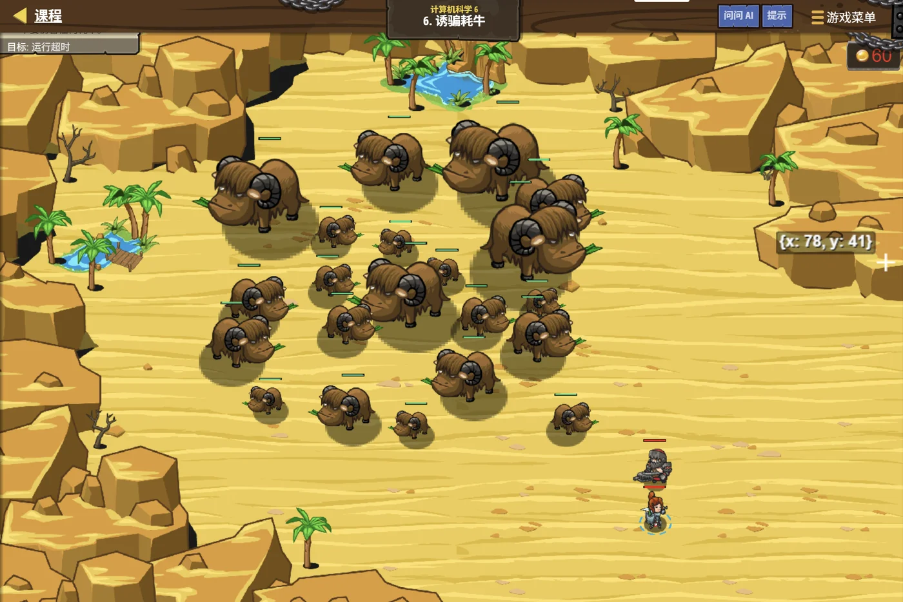

故事：云梯上的补给箱一个比一个沉，可背篓的容量是有限的。
贺舒曼把镜子举到补给箱前：每一箱都有重量和价值。
你不能全带走——得挑一组，让总价值最大。
你看着满地的箱子：每箱只有"拿"和"不拿"两种可能……
那就一个个考虑过去，记下每个容量下能装到的最好结果。
对。她点头，这就是背包问题，也是动态规划最经典的模型。
扣哒考级 · GESP C++ 六级 · 第 4 单元 | 云髓天阶 CLOUDMARROW STEPS
云梯补给 简单动态规划
Dynamic Programming

贺舒曼
镜中先知 · 你的向导
一条由云块构成的阶梯，直插入云海深处。
贺舒曼站在第 6 级台阶上，回头望着身后：每一级台阶侧面都刻着一个数字， 随着他的目光依次亮起。
你顺着看过去：这些数字……好像每一级都由下面级推出来的？
对。她点头，而且算过一次的，就不用再算了—— 这正是"动态规划"最重要的一句话。
贺舒曼站在第 6 级台阶上，回头望着身后：每一级台阶侧面都刻着一个数字， 随着他的目光依次亮起。
你顺着看过去：这些数字……好像每一级都由下面级推出来的？
对。她点头，而且算过一次的，就不用再算了—— 这正是"动态规划"最重要的一句话。
贺舒曼 · 镜中先知
上一课我们学了搜索。搜索的毛病是：它可能把同一件事反复算很多遍。这一课学动态规划——把算过的结果记下来，下次直接查表，不重复劳动。
它有点抽象，但只要抓住"状态"和"转移方程"两条线，就顺了。
assets/illustrations/py-L6-04-01_cloud_ladder.webp
【配图位】一条由云块垒成的阶梯直插云海，每级台阶侧面刻着一个数字，数字从下往上依次递增（如 1、1、2、3、5、8、13）；一名戴眼镜的先知站在较高的那一级回头望向已走过的台阶，身后的数字依次亮起、形成一串发光序列；云梯底部还留在云层之下，顶端没入更深的云中。
0 单元导语与目标
Unit Overview
0.1 学习目标
1学完这个单元，你将能……
- 说出"重复计算"到底浪费在哪里
- 用记忆化改造一个慢递归
- 用递推表（自底向上）写出解法
- 说出"状态"和"转移方程"是什么
- 解决爬楼梯、不相邻取数问题
- 写出 0/1 背包的一维写法并解释为什么要倒序
2对标 GESP 考纲（C++ 六级）
- 理解动态规划的基本思想
- 掌握记忆化搜索与递推表两种实现方式
- 能找出问题的状态与状态转移方程
- 掌握简单背包问题的解法
- 考核目标：能补全转移方程、能解释初始化与枚举顺序
0.2 考纲对照
| 本单元小节 | 对应考纲条目 | 真题常考形式 |
|---|---|---|
| 1 重复计算的浪费 | 动态规划的动机 | 递归斐波那契为什么会慢 |
| 2 记忆化 | 自顶向下的 DP | 加一个数组前后复杂度对比 |
| 3 递推表 | 自底向上的 DP | 循环的起点与边界怎么定 |
| 4 状态与转移方程 | DP 的两个核心概念 | "状态"取什么；方程怎么写 |
| 5 两个经典模型 | DP 应用 | 爬楼梯、不相邻取数、0/1 背包（必考） |
1 重复计算的浪费
Wasted Recomputation
1.1 从斐波那契说起
那个"看着优雅、跑起来很慢"的递归
C++
int fib(int n) {
if (n <= 1) return n;
return fib(n - 1) + fib(n - 2);
}
// 调用 fib(5) 时，看看都调用了什么：
//
// fib(5)
// / \
// fib(4) fib(3) ← fib(3) 第一次
// / \ / \
// fib(3) fib(2) fib(2) fib(1)
// ↑ 第二次！
// / \
// fib(2) fib(1)
// ↑ 第三次！
//
// ★ fib(3) 被算了 2 次、fib(2) 被算了 3 次……
// 越往下，重复得越离谱。总调用次数是"指数级"的。问题所在
同一个子问题被反复计算——
fib(40) 的调用次数是十亿量级，根本跑不完1.2 算过就别再算
动态规划最重要的一句话：
如果同一个子问题会被反复用到，那就算一次、把结果存起来，
下次直接用。
这样一来，每个子问题只会被真正计算一次—— 原本指数级的次数，一下子降到了线性级。
斐波那契从
这样一来，每个子问题只会被真正计算一次—— 原本指数级的次数，一下子降到了线性级。
斐波那契从
O(2ⁿ) 降到 O(n)，
靠的就是这一句话。
打个比方：
递归不管不顾的做法，就像每次要用到"37 × 58 等于多少"都重新手算一遍。
动态规划则是：算一次，写在纸上；下次要用直接看纸。
题目越大、重复越多，这个"记笔记"的动作就越值钱。
动态规划则是：算一次，写在纸上；下次要用直接看纸。
题目越大、重复越多，这个"记笔记"的动作就越值钱。
2 记忆化：自顶向下
Memoization
2.1 加一个数组记住结果
改造只加了三行
C++
long long memo[100]; // ★ ① 加一个"备忘录"数组
// 初始全为 0（或一个不可能的值）
long long fib(int n) {
if (n <= 1) return n;
if (memo[n] != 0) return memo[n]; // ★ ② 查过笔记就直接返回
memo[n] = fib(n - 1) + fib(n - 2); // ★ ③ 算完立刻记下来
return memo[n];
}三处改动
① 加数组；② 开头查表；③ 算完存表
结果
结果
fib(40) 从"十亿次调用"变成 "40 次计算"
备忘录的初值要选一个"不可能出现的值"。
上面用
如果答案有可能是 0，那就不能用 0 当标记—— 得另外开一个
斐波那契里
0 当"还没算过"的标记——
这要求答案不可能是 0。如果答案有可能是 0，那就不能用 0 当标记—— 得另外开一个
bool used[] 数组记录"算没算过"，
或者把 memo 全部初始化成一个特殊值。斐波那契里
fib(0) = 0——但它在出口处就返回了，
不会走到查表那一步，所以用 0 当标记是安全的。
2.2 代码与复杂度
| 朴素递归 | 加了记忆化 | |
|---|---|---|
| 时间 | O(2ⁿ) | O(n) |
| 空间 | O(n)（递归栈） | O(n)（备忘录 + 栈） |
| fib(40) 的规模 | 约 10⁹ 次调用（跑不完） | 约 40 次计算 |
| 代码改动 | — | 只加三行 |
记忆化为什么这么有效？
因为"每个子问题只算一次"。
斐波那契一共有 n 个子问题（
而它"想"的顺序没变——还是从 fib(n) 出发、往下问， 只是问之前先看一眼"这个问题我是不是已经答过了"。
所以记忆化又叫"自顶向下的动态规划"—— 从大问题出发，往下找小问题。
fib(0) 到 fib(n)），
每个只被真正计算一次，所以是 O(n)。而它"想"的顺序没变——还是从 fib(n) 出发、往下问， 只是问之前先看一眼"这个问题我是不是已经答过了"。
所以记忆化又叫"自顶向下的动态规划"—— 从大问题出发，往下找小问题。
图 2（SVG）：记忆化——重复的分支直接剪掉
3 递推表：自底向上
Bottom-Up DP
3.1 从小往大填表
换个方向想：不从 n 往下问，从 0 往上填
TEXT
记忆化是"自顶向下"：从 fib(10) 出发，缺谁就问谁。
递推表是"自底向上"：先把小的算好，再一层层往上推。
【填表的顺序】
dp[0] = 0 ← 已知条件，直接填
dp[1] = 1 ← 已知条件，直接填
dp[2] = dp[1] + dp[0] = 1
dp[3] = dp[2] + dp[1] = 2
dp[4] = dp[3] + dp[2] = 3
dp[5] = dp[4] + dp[3] = 5
……
← 每一格都只用到它左边那两格，而它们早就填好了
★ 好处：
· 没有递归，不会栈溢出
· 没有函数调用开销
· 还能"边算边扔"——如果只需要最后一项，
开两个变量滚动就够了，空间降到 O(1)核心
先定好"哪些格子是已知的"（边界），再按大小顺序一路填过去
3.2 代码与两种写法的取舍
递推表写法
C++
long long dp[100];
dp[0] = 0;
dp[1] = 1;
for (int i = 2; i <= n; i++) {
dp[i] = dp[i - 1] + dp[i - 2]; // ★ 转移方程
}
cout << dp[n] << endl;三段式
① 定边界（
② 按顺序循环填表；
③ 输出目标
dp[0]、dp[1]）；② 按顺序循环填表；
③ 输出目标
| 记忆化（自顶向下） | 递推表（自底向上） | |
|---|---|---|
| 思考方向 | 从大问题往下拆 | 从小问题往上堆 |
| 实现 | 递归 + 数组 | 循环 + 数组 |
| 会不会栈溢出 | 可能 | 不会 |
| 速度 | 稍慢（有函数调用开销） | 更快 |
| 好不好想 | 更贴近直觉（顺着题意就能写） | 要先想清"填表顺序" |
| 能不能省空间 | 不太能 | 常常能滚动优化 |
怎么选？
先想清楚"转移方程"，再挑写法。
顺着题意好想的（比如"走迷宫有多少种走法"）→ 先写记忆化，改起来快；
转移关系清楚的（比如"每一项等于前两项之和"）→ 直接写递推表，稳又快；
n 很大（10⁵ 以上）→ 一律用递推表，递归可能栈溢出。
两种写法算出来的答案一定一样——因为它们用的是同一个转移方程。
顺着题意好想的（比如"走迷宫有多少种走法"）→ 先写记忆化，改起来快；
转移关系清楚的（比如"每一项等于前两项之和"）→ 直接写递推表，稳又快；
n 很大（10⁵ 以上）→ 一律用递推表，递归可能栈溢出。
两种写法算出来的答案一定一样——因为它们用的是同一个转移方程。
4 状态与转移方程
State & Transition
4.1 什么叫"状态"
状态：你要记下来的那个"中间答案"。
做动态规划时，第一件事就是想清楚：
"我打算用一个数组来记什么？"
举例：
· 斐波那契：
· 爬楼梯：
· 不相邻取数：
· 0/1 背包：
把这句话用中文完整说一遍，就是"定义状态"。
dp[i] 的含义，就是所谓的"状态"。举例：
· 斐波那契：
dp[i] = 第 i 项的值；· 爬楼梯：
dp[i] = 走到第 i 级台阶的方法数；· 不相邻取数：
dp[i] = 从前 i 个里选、能得到的最大和；· 0/1 背包：
dp[w] = 容量为 w 时能装的最大价值。把这句话用中文完整说一遍，就是"定义状态"。
状态定义错了，后面全错。
最常见的错法是"少了一个维度"或者"含义含糊"。
比如 0/1 背包： 如果你把状态定义成"前 i 个物品能取得的最大价值"， 那就完全表达不了"背包还剩多少容量"这个关键信息——后面的转移根本写不下去。
正确的状态必须刚好够用： 让"当前决策"能够只依赖这几种状态。
一个实用的检查办法： 把状态的中文含义写出来，再问自己"知道这些状态，下一步能不能决定怎么走？"
比如 0/1 背包： 如果你把状态定义成"前 i 个物品能取得的最大价值"， 那就完全表达不了"背包还剩多少容量"这个关键信息——后面的转移根本写不下去。
正确的状态必须刚好够用： 让"当前决策"能够只依赖这几种状态。
一个实用的检查办法： 把状态的中文含义写出来，再问自己"知道这些状态，下一步能不能决定怎么走？"
4.2 怎么找出转移方程
找转移方程的通用问法：
"最后一步有几种可能？"
把最后一步分类讨论，每一类都对应"从哪个更小的状态转移过来"。
举例：
爬楼梯——最后一步要么从
不相邻取数——对第
这个方法几乎万能——先想"最后一步"，方程自然就浮出来了。
把最后一步分类讨论，每一类都对应"从哪个更小的状态转移过来"。
举例：
爬楼梯——最后一步要么从
i−1 跨 1 级、要么从 i−2 跨 2 级，
所以 dp[i] = dp[i−1] + dp[i−2]。不相邻取数——对第
i 个元素，要么不选它（那答案就是 dp[i−1]）、
要么选它（那就不能选 i−1，答案是 dp[i−2] + a[i]），
所以 dp[i] = max(dp[i−1], dp[i−2] + a[i])。这个方法几乎万能——先想"最后一步"，方程自然就浮出来了。
三个边界要一起想清楚。
写转移方程之后，还要回答三个问题：
① 最小的几个状态是什么值？（边界初始化）；
② 循环从几开始、到几结束？（保证用到的一定算过）；
③ 答案是哪一个状态？（
三个问题都答对了，DP 才算写完。
① 最小的几个状态是什么值？（边界初始化）；
② 循环从几开始、到几结束？（保证用到的一定算过）；
③ 答案是哪一个状态？（
dp[n] 还是 max(dp[...])）。三个问题都答对了，DP 才算写完。
5 两个经典模型
Classic Models
5.1 爬楼梯与不相邻取数
模型一：爬楼梯（每次 1 级或 2 级）
C++
int ways(int n) {
if (n <= 2) return n; // ways(1)=1, ways(2)=2
vector<int> dp(n + 1);
dp[1] = 1;
dp[2] = 2;
for (int i = 3; i <= n; ++i)
dp[i] = dp[i - 1] + dp[i - 2]; // ★ 最后一步分两类
return dp[n];
}状态
方程
答案
dp[i] = 走到第 i 级的方法数方程
dp[i] = dp[i−1] + dp[i−2]——
最后一步要么从 i−1 跨 1 级、要么从 i−2 跨 2 级答案
dp[n]（n = 3 时是 3；n = 5 时是 8）
模型二：不相邻取数（选出的数不能相邻）
C++
int maxSum(vector<int> &a) {
int n = a.size();
if (n == 0) return 0;
if (n == 1) return a[0];
vector<int> dp(n);
dp[0] = a[0];
dp[1] = max(a[0], a[1]); // 前两个里挑大的
for (int i = 2; i < n; ++i)
dp[i] = max(dp[i - 1], dp[i - 2] + a[i]); // ★ 选 或 不选
return dp[n - 1];
}状态
方程
不选 a[i] → 答案是
dp[i] = 从前 i+1 个数里选、能得到的最大和方程
dp[i] = max(dp[i−1], dp[i−2] + a[i])——不选 a[i] → 答案是
dp[i−1]；选 a[i] → 就不能选 a[i−1]，答案是 dp[i−2] + a[i]assets/illustrations/py-L6-04-03_memo_note.webp
【配图位】云梯旁的石壁上挂着一长排小石板，每块石板上用发光刻痕写着一个已经算好的数字（按顺序排列、依次递增）；一名戴眼镜的先知正把刚算出的结果刻到新的那块石板上，另一只手伸向已经刻好字的一块旧石板（表示"直接查，不再重算"）；石板上方有一串淡去的、被划掉的重复刻痕，暗示"这些原来要算很多遍"。
图 4（SVG）：不相邻取数——选或不选，分两种情况比大小
5.2 0/1 背包
0/1 背包：每件物品只有"拿"或"不拿"两种选择
C++
// 二维写法（更好理解）
// dp[i][w] = 只考虑前 i 件物品、容量为 w 时能装的最大价值
for (int i = 1; i <= n; i++) {
for (int w = 0; w <= W; w++) {
dp[i][w] = dp[i - 1][w]; // 不拿第 i 件
if (w >= weight[i]) {
dp[i][w] = max(dp[i][w],
dp[i - 1][w - weight[i]] + value[i]); // 拿
}
}
}两种选择
不拿第 i 件 →
注意"拿"那一项用的是
dp[i−1][w]；拿 → dp[i−1][w − weight[i]] + value[i]注意"拿"那一项用的是
i − 1——因为每件只能拿一次
一维写法：省掉一维，容量必须"倒着枚举"
C++
// dp[w] = 容量为 w 时能装的最大价值
for (int i = 0; i < n; ++i) {
for (int w = W; w >= weight[i]; --w) { // ★ 从大到小！
dp[w] = max(dp[w], dp[w - weight[i]] + value[i]);
}
}关键就是那个
--w（倒着枚举容量）
它保证每件物品最多被选一次——
这是 0/1 背包一维写法的命脉，真题专门考过
为什么一维写法必须倒着枚举容量？
看这一句：
它用到的是"
如果从小到大枚举
如果从大到小枚举
一句话记牢： 倒序 → 0/1 背包（每件至多一次）；正序 → 完全背包（每件可以拿无数次）。
dp[w] = max(dp[w], dp[w − weight[i]] + value[i])它用到的是"
dp[w − weight[i]]"——一个更小容量的位置。如果从小到大枚举
w：
那么较小的那个位置本轮已经被更新过了——
于是 dp[w] 用到了"已经拿过第 i 件物品"的结果，
等于第 i 件物品被拿了不止一次。如果从大到小枚举
w：
较小的位置还是"上一轮（没考虑第 i 件）"的值，
所以每件物品只会被拿一次 ✔一句话记牢： 倒序 → 0/1 背包（每件至多一次）；正序 → 完全背包（每件可以拿无数次）。
assets/illustrations/py-L6-04-02_knapsack.webp
【配图位】云海平台的石桌上摆着若干件重量与价值各不相同的物品，每件物品上方都浮着两个发光数字（重量、价值）；一只行者的背包敞口放在一旁，包口边缘刻着容量刻度并发出微光；其中一组物品被一圈光晕框出、正被一件件放进背包，其余物品留在原地；一名戴眼镜的先知站在桌旁权衡。
6 代码实战
Level Practice
关卡
诱骗耗牛
进入关卡 →思路：用 0/1 背包的一维写法—— 外层枚举物品、内层倒着枚举容量。

assets/stages/py-L6-04-stage1_deceptive_yak.webp
【截图位】诱骗耗牛关卡：云梯平台与补给箱同框，代码编辑区可见 DP 数组与转移方程。
0/1 背包一维写法（完整代码）
C++
#include <iostream>
#include <algorithm>
using namespace std;
int weight[1005], value[1005];
int dp[100005];
int main() {
int n, W;
cin >> n >> W; // n 件物品、背包容量 W
for (int i = 0; i < n; i++) {
cin >> weight[i] >> value[i];
}
for (int i = 0; i < n; ++i) {
for (int w = W; w >= weight[i]; --w) { // ★ 倒着枚举容量
dp[w] = max(dp[w], dp[w - weight[i]] + value[i]);
}
}
cout << dp[W] << endl;
return 0;
}输入 3 10 / 5 8 / 4 6 / 6 10 输出 14
验算 选第 2 件（重 4 价 6）和第 3 件（重 6 价 10）， 总重 10 刚好装满，总价 6 + 10 = 14——比只拿第 1 件的 8 更好
验算 选第 2 件（重 4 价 6）和第 3 件（重 6 价 10）， 总重 10 刚好装满，总价 6 + 10 = 14——比只拿第 1 件的 8 更好
和本单元的关系：
这道题把本单元的所有概念都用上了：状态、转移方程、初始化、枚举顺序。
① 状态：
② 转移：
③ 枚举顺序：容量必须倒着来—— 这样每件物品最多被选一次（0/1 背包的本质）。
把内层改成
这一个符号的差别，是六级真题里反复出现的考点。
去扣哒世界闯这一关 →
① 状态：
dp[w] = 容量为 w 时能装的最大价值；② 转移：
dp[w] = max(dp[w], dp[w − weight[i]] + value[i])——
"不拿"就是原来的 dp[w]，"拿"就是 dp[w − weight[i]] + value[i]；③ 枚举顺序：容量必须倒着来—— 这样每件物品最多被选一次（0/1 背包的本质）。
把内层改成
for (int w = weight[i]; w <= W; ++w)（正序），
它就变成了"完全背包"——每件物品可以拿任意多次。这一个符号的差别，是六级真题里反复出现的考点。
7 常见陷阱
Common Pitfalls

扣哒鸭 · 调试官
DP 的坑集中在"边界"和"顺序"上。四条，后两条真题都考过。
1
忘了给 dp 数组设初值。

扣哒鸭：边界值必须手动填好，否则整个表都是错的。
比如爬楼梯要写
循环从
比如爬楼梯要写
dp[1] = 1; dp[2] = 2;，
背包要保证 dp 全为 0（表示"什么也不装价值为 0"）。循环从
i = 3 还是 i = 2 开始，也取决于边界填到了哪儿。习惯：先写边界，再写循环
2
求最大值时把初值设成了 0，结果全错。

扣哒鸭：要看清楚"能不能什么都不选"。
不相邻取数里，
而背包里
同样一个 0，在两种题里一个对一个错。
不相邻取数里，
dp[0] 必须等于 a[0]、dp[1] 取前两个的较大值——
因为题目要求"至少选一个"，不能设成 0。而背包里
dp 全设 0 是对的——因为"什么都不装"确实价值为 0。同样一个 0，在两种题里一个对一个错。
判断："允许什么都不选吗？"允许才用 0 当边界
3
0/1 背包的容量写成了"从小到大"。

扣哒鸭：
正序的话，
那就变成完全背包了。
for (int w = W; w >= weight[i]; --w) ——
必须是倒序！正序的话，
dp[w - weight[i]] 可能这一轮已经被更新过了，
等于第 i 件物品被拿了不止一次。那就变成完全背包了。
记牢：0/1 背包倒序；完全背包正序
4
把递归斐波那契的时间和空间复杂度记成"都是 O(n)"。

扣哒鸭：空间确实是 O(n)，因为递归栈最深只有 n 层。
但时间是
口诀：空间看"最深的层数"，时间看"一共算了多少次"。
但时间是
O(2ⁿ)——因为同一个子问题被重复算了指数多次。口诀：空间看"最深的层数"，时间看"一共算了多少次"。
记牢：朴素递归 fib → 时间
O(2ⁿ)、空间 O(n)8 题目练习
Practice
前 5 题改编自 C++ 六级真题，其余为原创练习题。
改编自 2026 年 9 月 · C++ 六级 · 第 13 题单选题
下面代码计算走到第
n 级台阶的方法数，
每次可以走 1 级或 2 级。横线处应填写（ ）。int ways(int n) {
if (n <= 2)
return n;
vector<int> dp(n + 1);
dp[1] = 1;
dp[2] = 2;
for (int i = 3; i <= n; ++i)
dp[i] = __________________________;
return dp[n];
}
A.
C.
dp[i - 1] + 1 B.dp[i - 1] + dp[i - 2]C.
dp[i - 2] + 2 D.2 * dp[i - 1]
查看答案与详解
答案：B。用"最后一步分几类"这个通用办法：
走到第 i 级台阶的"最后一步"，只有两种可能：
① 从第 i−1 级跨 1 级上来——那么之前必须已经走到了 i−1，方法数是
② 从第 i−2 级跨 2 级上来——之前走到了 i−2，方法数是
这两类覆盖了全部情况、而且互不重叠，所以加起来：
验算一下：
A、C 项加的是常数（1 或 2），而"方法数"是会成倍增长的，加常数根本表达不出来；
D 项只乘了
顺带注意：这个转移方程和斐波那契长得一模一样， 只是初始值不同（这里
对应小节5.1 爬楼梯与不相邻取数。
走到第 i 级台阶的"最后一步"，只有两种可能：
① 从第 i−1 级跨 1 级上来——那么之前必须已经走到了 i−1，方法数是
dp[i−1]；② 从第 i−2 级跨 2 级上来——之前走到了 i−2，方法数是
dp[i−2]。这两类覆盖了全部情况、而且互不重叠，所以加起来：
dp[i] = dp[i−1] + dp[i−2] ✔验算一下：
dp[3] = dp[2] + dp[1] = 2 + 1 = 3
（1+1+1、1+2、2+1，确实是 3 种）；
dp[4] = 3 + 2 = 5；dp[5] = 5 + 3 = 8 ✔A、C 项加的是常数（1 或 2），而"方法数"是会成倍增长的，加常数根本表达不出来；
D 项只乘了
dp[i−1]，漏掉了"从 i−2 跨 2 级"这一整类情况。顺带注意：这个转移方程和斐波那契长得一模一样， 只是初始值不同（这里
dp[1]=1, dp[2]=2）——
所以它是斐波那契的"错位版"。对应小节5.1 爬楼梯与不相邻取数。
改编自 2026 年 9 月 · C++ 六级 · 第 14 题单选题
下面代码求从包含非负元素的数组中选择若干个互不相邻元素
所能得到的最大和。横线处应填写（ ）。
int maxSum(vector<int> &a) {
int n = a.size();
if (n == 0) return 0;
if (n == 1) return a[0];
vector<int> dp(n);
dp[0] = a[0];
dp[1] = max(a[0], a[1]);
for (int i = 2; i < n; ++i)
dp[i] = __________________________;
return dp[n - 1];
}
A.
C.
dp[i - 1] + a[i] B.dp[i - 2] + a[i]C.
max(dp[i - 1], dp[i - 2] + a[i]) D.max(dp[i - 1], a[i])
查看答案与详解
答案：C。还是那个办法——对第 i 个元素，只有"选"和"不选"两种情况。
情况一：不选 a[i]。 那么答案就是"从前 i−1 个里能取得的最大和"，也就是
情况二：选 a[i]。 因为不能选相邻的，所以
两种情况取大的：
A 项漏了"不能相邻"的限制——它等于允许选相邻的， 那就变成"全部加起来"了；
B 项只考虑了"选"的情况，完全丢掉了"不选"这一整类；
D 项里
验算（数组 2 7 9 3 1）：
对应小节5.1 爬楼梯与不相邻取数。
情况一：不选 a[i]。 那么答案就是"从前 i−1 个里能取得的最大和"，也就是
dp[i−1]。情况二：选 a[i]。 因为不能选相邻的，所以
a[i−1] 一定不能选——
只能从"前 i−2 个"里去找最优，再加上 a[i]，
也就是 dp[i−2] + a[i]。两种情况取大的：
dp[i] = max(dp[i−1], dp[i−2] + a[i]) ✔A 项漏了"不能相邻"的限制——它等于允许选相邻的， 那就变成"全部加起来"了；
B 项只考虑了"选"的情况，完全丢掉了"不选"这一整类；
D 项里
max(dp[i−1], a[i]) 的比较对象不对劲——
它是在"以前的最优"和"单个 a[i]"之间比，却忘了选 a[i] 之后还能接上前面的 dp[i−2]。验算（数组 2 7 9 3 1）：
dp[0]=2、dp[1]=max(2,7)=7、
dp[2]=max(7, 2+9)=11、
dp[3]=max(11, 7+3)=11、
dp[4]=max(11, 11+1)=12 ✔
——选 2、9、1，正好 12。对应小节5.1 爬楼梯与不相邻取数。
改编自 2026 年 9 月 · C++ 六级 · 第 15 题单选题
下面是一维数组实现的 0/1 背包。内层循环必须从大到小枚举容量，
主要原因是（ ）。
for (int i = 0; i < n; ++i) {
for (int w = W; w >= weight[i]; --w) {
dp[w] = max(dp[w], dp[w - weight[i]] + value[i]);
}
}
A.保证每件物品最多被选择一次
B.保证物品必须按照重量从大到小选择
C.降低时间复杂度
D.防止数组
B.保证物品必须按照重量从大到小选择
C.降低时间复杂度
D.防止数组
dp 发生越界
查看答案与详解
答案：A。关键要看这一句用到了谁：
如果从小到大枚举 w： 当我们处理
如果从大到小枚举 w： 轮到
B 项完全无关：物品的重量大小和枚举顺序没有关系， 外层循环本来就是按输入顺序一件件考虑的；
C 项不对：正序和倒序的时间复杂度完全一样，都是
D 项也不对：越界与否只取决于循环的上下界， 和"从哪一端开始"没有关系。
一句话记牢： 倒序 → 0/1 背包（每件至多一次）；正序 → 完全背包（每件可拿无数次）。 把
对应小节5.2 0/1 背包。
dp[w − weight[i]] ——
一个更小容量的位置。如果从小到大枚举 w： 当我们处理
dp[w] 时，那个更小的容量本轮已经被更新过了。
于是 dp[w − weight[i]] 里已经包含了"拿过第 i 件物品"的结果——
再用它来算 dp[w]，等于第 i 件物品被拿了不止一次。如果从大到小枚举 w： 轮到
dp[w] 时，更小的位置还是"上一轮（没考虑第 i 件）"的值 ✔
——所以每件物品只会被拿一次，这正是 0/1 背包的要求。B 项完全无关：物品的重量大小和枚举顺序没有关系， 外层循环本来就是按输入顺序一件件考虑的；
C 项不对：正序和倒序的时间复杂度完全一样，都是
O(nW)；D 项也不对：越界与否只取决于循环的上下界， 和"从哪一端开始"没有关系。
一句话记牢： 倒序 → 0/1 背包（每件至多一次）；正序 → 完全背包（每件可拿无数次）。 把
--w 改成 ++w，问题的性质就变了。对应小节5.2 0/1 背包。
改编自 2026 年 9 月 · C++ 六级 · 判断题 第 9 题判断题
下面的一维动态规划代码实现的是完全背包问题，
因为在处理第 i 种物品时，同一种物品可能被重复选择。（ ）
for (int i = 0; i < n; ++i) {
for (int w = weight[i]; w <= W; ++w) {
dp[w] = max(dp[w], dp[w - weight[i]] + value[i]);
}
}
查看答案与详解
答案：正确（√）。判别的关键就是内层容量是"正序"还是"倒序"。
这段代码里写的是
正序会导致什么？ 处理
于是拿着它来算
对比一下 0/1 背包： 它写的是
两者的代码差别只有
对应小节5.2 0/1 背包。
这段代码里写的是
w = weight[i]; w <= W; ++w——正序（从小到大）。正序会导致什么？ 处理
dp[w] 时，更小的容量 dp[w − weight[i]] 本轮已经更新过了——
它里面已经包含了"拿过第 i 件物品"的结果。于是拿着它来算
dp[w]，相当于第 i 件物品又被拿了一次——
同一种物品可以拿任意多次，这正是完全背包的定义 ✔对比一下 0/1 背包： 它写的是
w = W; w >= weight[i]; --w（倒序）——
保证用到的一定是"上一轮"的值，所以每件物品至多一次。两者的代码差别只有
--w 和 ++w 这一个符号，
但解决的问题完全不同。这是六级 DP 部分最经典的一个对比，务必记牢。对应小节5.2 0/1 背包。
改编自 2026 年 6 月 · C++ 六级 · 判断题 第 10 题判断题
动态规划问题通常要求具有最优子结构，
并且常常存在重叠子问题。（ ）
查看答案与详解
答案：正确（√）。这句话点出了动态规划能够成立的两个前提。
① 最优子结构： 大问题的最优解，可以由子问题的最优解拼出来。
举例：爬楼梯里，"走到第 5 级的方法数"是由"走到第 4 级"和"走到第 3 级"的方法数相加得到的—— 子问题的最优（这里就是"方法数最多"的完整计数）能直接支撑大问题。
反过来说：如果一个问题的最优解没法从小问题的最优解推出来，那它就不能用 DP。
② 重叠子问题： 不同的分支会反复用到同一个子问题。
举例：递归斐波那契里，
如果子问题之间完全互不重叠（比如普通的二分查找、归并排序的分支）， 那只叫"分治"，不需要 DP——因为压根没有重复可省。
一句话总结这两个前提的分工： "最优子结构"决定了 DP 能不能用；"重叠子问题"决定了 DP 值不值得用。
对应小节1.2 算过就别再算；4.1 什么叫"状态"。
① 最优子结构： 大问题的最优解，可以由子问题的最优解拼出来。
举例：爬楼梯里，"走到第 5 级的方法数"是由"走到第 4 级"和"走到第 3 级"的方法数相加得到的—— 子问题的最优（这里就是"方法数最多"的完整计数）能直接支撑大问题。
反过来说：如果一个问题的最优解没法从小问题的最优解推出来，那它就不能用 DP。
② 重叠子问题： 不同的分支会反复用到同一个子问题。
举例：递归斐波那契里，
fib(3) 被算了 2 次、fib(2) 被算了 3 次——
这就是"重叠"。
正是因为有重叠，"记下来别重算"才有意义。如果子问题之间完全互不重叠（比如普通的二分查找、归并排序的分支）， 那只叫"分治"，不需要 DP——因为压根没有重复可省。
一句话总结这两个前提的分工： "最优子结构"决定了 DP 能不能用；"重叠子问题"决定了 DP 值不值得用。
对应小节1.2 算过就别再算；4.1 什么叫"状态"。
原创练习题判断题
把朴素递归的斐波那契函数加上"记忆化"（用一个数组记下已算出的结果）之后，
时间复杂度从
O(2ⁿ) 降到了 O(n)。（ ）查看答案与详解
答案：正确（√）。这是记忆化最经典的效果。
为什么能从指数级降到线性？
朴素递归的问题在于：
加上记忆化之后： 每个
而 fib 一共有几个子问题？
代码改动有多大？ 只加三行：开头查表、算完存表、以及一个数组。 "性价比"高得惊人。
顺便对比空间： 两者都是
对应小节2.2 代码与复杂度。
为什么能从指数级降到线性？
朴素递归的问题在于：
fib(3) 会被算 2 次、fib(2) 被算 3 次，越往下重复越多——
总调用次数约等于 2ⁿ。加上记忆化之后： 每个
fib(k) 第一次被调用时算出结果并存入 memo[k]；
之后再需要 fib(k)，直接查表返回，不再往下展开。而 fib 一共有几个子问题？
fib(0) 到 fib(n)，一共 n + 1 个。
每个只被真正计算一次，所以总工作量是 O(n) ✔代码改动有多大？ 只加三行：开头查表、算完存表、以及一个数组。 "性价比"高得惊人。
顺便对比空间： 两者都是
O(n)——
递归栈的深度最多 n 层，记忆化并不会让空间变差（只多了一个长度 n 的数组）。对应小节2.2 代码与复杂度。
原创练习题编程题
题目要求：有
样例：输入
n 件物品，第 i 件重量为
w[i]、价值为 v[i]；
背包容量为 W，每件物品最多拿一次。
求能获得的最大总价值。样例：输入
3 10 和三件物品
5 8 / 4 6 / 6 10，输出 14。查看参考答案与要点
#include <iostream>
#include <algorithm>
using namespace std;
int weight[1005], value[1005];
int dp[100005];
int main() {
int n, W;
cin >> n >> W;
for (int i = 0; i < n; i++)
cin >> weight[i] >> value[i];
for (int i = 0; i < n; ++i) {
for (int w = W; w >= weight[i]; --w) { // ★ 倒着枚举容量
dp[w] = max(dp[w], dp[w - weight[i]] + value[i]);
}
}
cout << dp[W] << endl;
return 0;
}
输入 3 10 + 5 8 / 4 6 / 6 10 输出：14
要点：
① 状态：dp[w] 表示"容量为 w 时能装的最大价值"——
这句话要先说清楚，代码才写得对；
② 转移：max(dp[w], dp[w − weight[i]] + value[i])——
前者是"不拿第 i 件"（沿用原值），后者是"拿"（容量少了一截、价值增加）；
③ 倒序枚举容量是命脉：
写成 ++w 就变成完全背包了（每件可拿多次）；
④ 内层下界是 weight[i]——
再小的容量根本装不下这件物品，循环到它就停；
⑤ dp 数组默认全为 0 正好是正确答案的边界——
表示"什么也不装，价值为 0"；
⑥ 复杂度 O(nW)，空间 O(W)（一维写法省掉了一维）。
对应小节5.2 0/1 背包；6 代码实战。
9 本单元小结
Unit Summary
贺舒曼 · 镜中先知
四句话记住动态规划：一、核心只有一句：算过的就记下来，别再重算。指数级能降到线性级。
二、两种写法：记忆化（自顶向下，递归+数组）；递推表（自底向上，循环填表）。
三、两步思考：先定义状态（
dp[i] 是什么），再想"最后一步有几种可能"写出方程。四、0/1 背包倒序枚举容量；改成正序就变成完全背包。
云梯爬上来了。下一站是造物工坊——那里有一张蓝图，和流水线上滚出来的一模一样的成品。
你在云梯上收获了什么
- 重复计算的浪费——朴素递归斐波那契的时间是
O(2ⁿ)， 同一个子问题被算了很多遍。 - DP 的核心一句话——算过的记下来，下次直接查表。
- 记忆化（自顶向下）——递归 + 一个备忘录数组； 三行改动，时间从 O(2ⁿ) 降到 O(n)。
- 备忘录的初值——要选"答案不可能出现的值"；
答案可能是 0 时，得另开
used[]数组。 - 递推表（自底向上）——先定边界，再从小到大填表； 不会栈溢出、更快、还能滚动优化空间。
- 两种写法等价——用的是同一个转移方程，答案一定一样。
- 状态——
dp[i]的含义； 用中文完整说一遍就是"定义状态"。 - 找转移方程的通用办法——问"最后一步有几种可能"，分类讨论。
- 三个边界要一起想——最小状态的值、循环范围、答案是哪一个。
- 爬楼梯——
dp[i] = dp[i−1] + dp[i−2]； 最后一步要么跨 1 级、要么跨 2 级。 - 不相邻取数——
dp[i] = max(dp[i−1], dp[i−2] + a[i])； 不选 / 选（选了就不能选相邻的）。 - 0/1 背包状态——
dp[w]= 容量为w时的最大价值。 - 0/1 背包必须倒序枚举容量——保证每件物品最多被选一次。
- 正序 = 完全背包——只差一个符号，问题性质完全不同。
- DP 的两个前提——最优子结构（能不能用）+ 重叠子问题（值不值得用）。
下一站：造物工坊
云天之上一座工坊里，墙上悬着一张巨大的发光蓝图——
图上画着机械鹰的结构标注；而下方流水线上，正滚出一只只与蓝图一模一样的成品。
下一单元我们学面向对象思想与类的创建：
怎么把"蓝图"和"产品"分开，让同一份设计造出无数个对象。